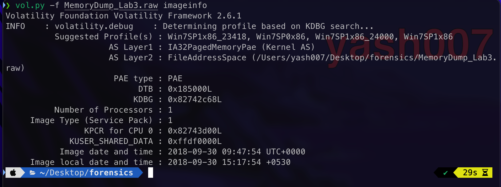
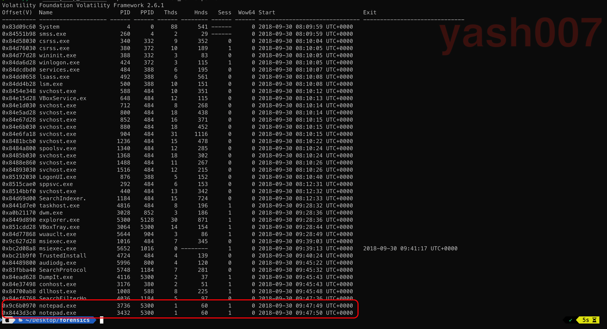
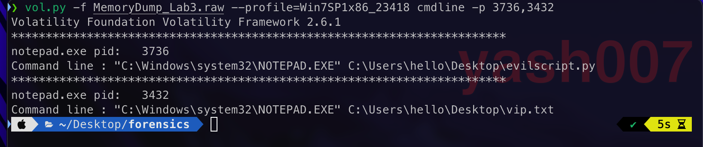
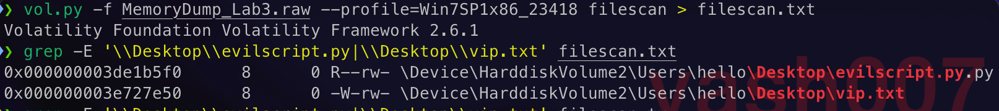
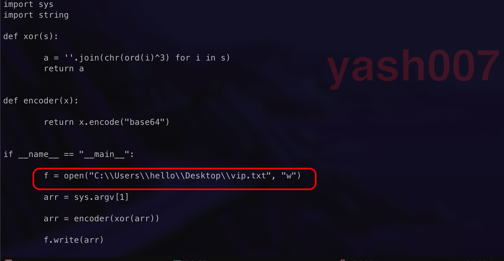
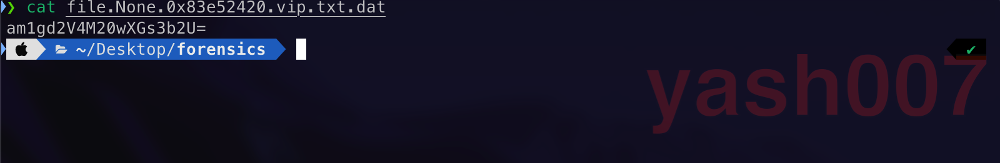
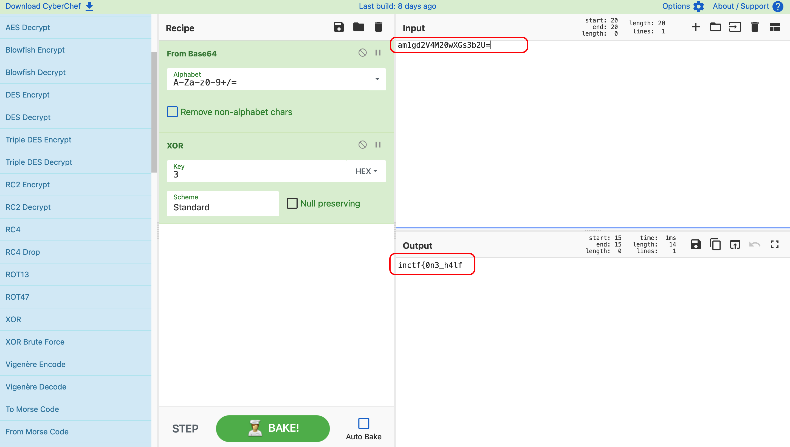
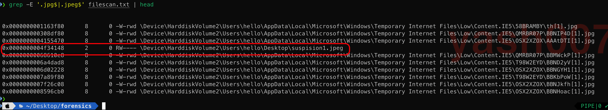
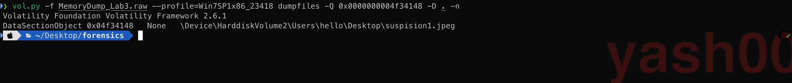
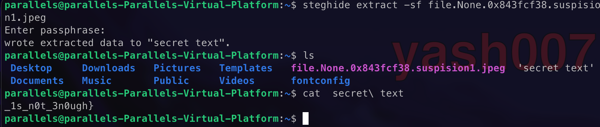

This is the third blog of forensic series, in which we will try to extract the information from the image .
Challenge Description
A malicious script encrypted a very secret piece of information I had on my system. Can you recover the information for me please?
Note-1: This challenge is composed of only 1 flag. The flag split into 2 parts.
Note-2: You'll need the first half of the flag to get the second.
Analysis
We will start by analysing the Raw image file which we got for this challenge.

This image is dump of Windows 7 , as we have seen in our earlier blogs.
Now we will analyse the recently services used or files before this dump was created.
- Recent Active Processes.
- Commands executed successfully.
- Terminated Processes.

Process list shows notepad.exe process was mostly used.
Using cmdline plugin , to check which files were opened.

We saw some interesting files were written such as evil.py and vip.txt.
To take a closer look of files written we just extract those to an text file.

Using offsets found earlier we will dump the file to analyse.

Python Script Mechanism :
- User input String as a Command-Line Argument.
- Breaks the string into characters and XOR to each character to 3.
- Encode the XOR to Base64.
- Writes the Base64 Encoded data to vip.txt.

Using online tool we will try to decrypt the Base64 Encoded XOR to reverse the steps.

FLAG - 01 : inctf{0n3_h4lf
Filescan Output , gives some common file format but we can see something suspicious.

Using the offset we tried to dump the following file for better analysis.

Extracted Output:
We try to find the hidden information from the extracted image.

So we found our second flag.
FLAG - 02 : _1s_n0t_3n0ugh}
Appending the two Flags together we will get our Final Flag.
FINAL-FLAG: inctf{0n3_h4lf_1s_n0t_3n0ugh}